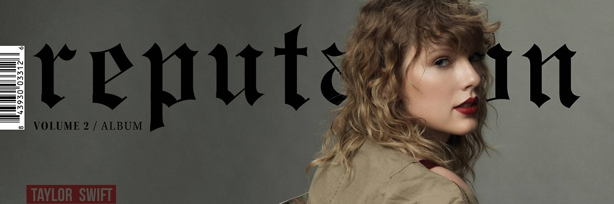

From the Firehose
A SAGA DE TAYLOR SWIFT – DISCOGRAFIA
A princesinha do country conquistou a todos com suas letras sobreamor e hoje é uma das maiores popstars do mundo.
Taylor Alison Swift é uma cantora, compositora e instrumentista norte-americana, nascida em 13 de dezembro de 1989. Sagitariana, Taylor ficou muito famosa por conta de suas composições sobre amor, tocadas ao som do bom e velho Country. A cantora se destacou muito nesse meio musical por ter uma personalidade super delicada e por reinventar o estilo que cantava.
Taylor Swift(2006)
Em outubro de 2006 Taylor debutava com seu álbum de estréia, esse que carrega seu rosto e seu nome, sendo seu portifólio ao mundo. Lançado pela Big Machine Records, o álbum conta com onze faixas e todas escritas pela própria cantora. Este conta com a produção de Nathan Chapman, Robert Ellis Orrall e Angelo Petraglia. Sendo uma jovem sonhadora, Taylor decidiu escrever sobre suas experiências de vida e sobre os amores que tinha vivido e que ainda sonhava em viver. O álbum é basicamente um recorte de sua vida. Com a predeominancia do Country, em uma versão mais teen em suas canções, a crítica elogiou muito o disco e previu que Taylor seria uma das artistas mais promissoras do estilo..
Fearless(2008)
Vencedor de dois Grammy’s e lançado em novembro de 2008, o disco continuou o que Taylor começou em seu álbum de estréia. Ainda é o mesmo Country Pop, só que ainda mais adocicado, o que gerou críticas bem mistas em relação ao que a cantora queria passar com suas músicas. Elogiaram muito a construção do disco e as habilidades de escrita de Taylor, mas para um segundo álbum, ficou um pouco mais do mesmo.
- Em contra ponto os fãs amaram. “Fearless” estreou na primeira posição da Billboard 200, vendendo 592 304 cópias nos Estados Unidos. Em relação ao “Taylor Swift”, este fez um sucesso estrondoso..
Speak Now(2010)
Seguindo o ritual de sempre lançar seus discos no final do ano, “Speak Now” veio ao mundo no final de outubro de 2010. A produção do disco ficou nas mãos da própria cantora, junta de Nathan Chapman, e as composições são todas de Taylor também. “Speak Now” foi um sucesso instantâneo, o álbum atingiu o topo da Billboard 200 e vendeu surpreendentes 1 milhão e 47 mil cópias, registrando como a maior semana de vendas para uma artista feminina de Country da história! Taylor Swift superou até mesmo a lendaria Shania Twain. Desta vez Taylor quis ousar mais em suas músicas e fez algumas mudanças em seu gênero musical, mesclando o Country com o Blues e o Folk, desmanchando um pouco a sua imagem de princesinha do Country Pop, dando mais seriedade ao seu trabalho.
Red(2012)
Voltando para outubro de 2012, Taylor seguia seu ritual e se dava muito bem. Fazendo história, “Red” vendeu 500 mil unidades em suas primeiras vinte e quatro horas, e no final da semana ele já havia vendido mais de 1 milhão e 200 mil unidades, sendo a única cantora a ter dois álbuns que venderam mais de um milhão de cópias em uma semana. Aprimorando seu repertório, Taylor começou a responder em músicas ao seus estímulos emocionais. Nesta época já estavam públicas as suas relações pessoais com ícones famosos, como Taylor Lautner e Harry Styles. É então que surge seu maior hino de desapego “I Knew You Were A Trouble”, que fala sobre seu relacionamento com o ator Jake Gyllenhaal. Seu apelido na época era “namoradinha da americana”, uma maneira machista de dizer que ela trocava muito de namorado e por conta da maioria de suas músicas falarem sobre seus relacionamentos (o que não deixa necessariamente de ser verdade). Em “Red” Taylor falou sobre o estado atual de sua vida, e como se sentia mais madura. Além de outros dilemas mais sentimentais.
1989(2014)
O quinto álbum de Taylor, vencedor de dosi prêmios Grammy, incluindo o de álbum do ano, foi lançado em outubro assim como os outros. Desta vez a cantora investiu fortemente no Dance Pop e no Synthpop, sendo “1989” seu álbum mais dançante e enérgico até então. A cantora seguiu trabalhando com os mesmos compositores de “Red”, incluindo Max Martin, que foi um personagem importante na criação do disco. Rebatendo seus haters, Taylor lançou “Shake It Off”, que é uma mensgame bem específica de “eu estou pouco me lixando para o que pensam de mim”. O disco possui canções um tanto quanto “mais do mesmo” em relação ao que estava bombando na época, Algumas faixas poderiam facilmente ser excluída da versão final do disco. No entanto várias delas são icônicas, como “Style” e “Wildest Dreams”.
Reputation(2017)
Ainda pela Big Machine, Taylor lançou “Reputation” em 10 de novembro de 2017. Com um estilo mais eletrônico, Taylor voltou para falar sobre como sua reputação estava manchada, e sobre como ela se rergueu após ser exposta e atacada. Além disso tudo, o álbum também é focado nos relacionamentos que Taylor teve durante esse tempo (aah, jura?), mas inacreditavelmente as músicas conseguem não ser um clichê, tendo até mesmo um toque quase feminista em cada uma, já que a cantora grita a sua liberdade sexual e seu gosto por homens, assim como vários homens da industria fazem o mesmo. O disco foi um sucesso em vendas, fazendo com que Taylor debutasse no topo da Billboard 200 mais uma vez. Foi o terceiro disco mais vendido de 2017, ficando atrás de Ed Sheeran e Kendrick Lamar.
Lover(2019)
Após perder o direito às suas masters para Scooter Braun, Taylor Swift focou única e exclusivamente em seu novo álbum, “Lover”, que foi lançado pela Republic Records, com a produção assinada por Jack Antonoff, Joel Little e a própria Taylor. A popstar decidiu investir em uma sonoridade bem Pop chiclete, levando o conceito ao pé da letra. O disco é repleto de refrões repetitivos e agúdos, com grande particiação da voz de cabeça da Taylor. Entretanto, desde “Reputation” a cantora vem trabalhando mais em seus registros graves, com a voz de peito, mas um detalhe que percebi desde então é que Swift está “falando” mais em suas música, como em “Miss Americana & The Heartbreak Prince”, igual “Look What You Made Me Do”.